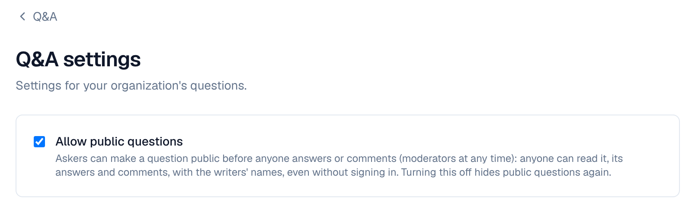

Q&A belongs to the organization: questions and answers are shared by everyone in it, outside any space. Organization admins are its moderators (super admins too). How people ask and answer is in the user guide's Q&A.
1. Who can do what
| Members | Moderators | |
|---|---|---|
| Read, ask, answer, comment, vote | Yes | Yes |
| Edit and delete | Their own posts (a question only while it has no answers) | Anyone's |
| Accept an answer | The asker | Yes |
| Close and reopen questions | Yes | |
| Mark as duplicate | Yes | |
| Lock comments on a question | Yes | |
| Merge tags | Yes | |
| See a post's earlier versions | Their own | Anyone's |
| Make a question public | Their own, before anyone answers or comments | Any time |
Nobody votes on their own posts. Moderators' changes to other people's posts, and every delete, are recorded in the audit log.
2. Moderator actions
- Mark as duplicate: points readers to the original question; a duplicate takes no new answers. Not a duplicate reopens it. Deleting an original closes its duplicates.
- Lock comments: only moderators can comment or change comments on that question until it is unlocked.
- Merge a tag into another: its questions and followers move, and the tag goes.
- Close or Reopen a question.
3. Q&A settings

Q&A → Settings (moderators) has one setting for the organization:
- Allow public questions: askers can make a question public before anyone answers or comments, and moderators at any time. Anyone can then read it, its answers and comments, with the writers' names, without signing in, under Public questions. Turning it off hides public questions again.
- Public questions also need anonymous access for the installation; while it's off, they show only to signed-in people.
- Choose Q&A in the left menu, then Settings. Only Q&A moderators see it.
- Turn on Allow public questions.
- If the page says anonymous access is off, ask an administrator to turn it on under Settings → Security; until then public questions show only to signed-in people.
4. Limits and alerts
- Per person: 30 questions an hour, 120 answers, 600 votes, 240 comments, 240 edits and deletes.
- Followers of a question or tag get in-app alerts for new answers, questions, comments and accepted answers; there are no Q&A emails yet.
- Reputation (+10 per upvote, −2 per downvote, +15 per accepted answer) is recomputed every 15 minutes.
- Every create, change, close, accept and delete raises an event (qna.*), so policies can refuse them and automation can react.